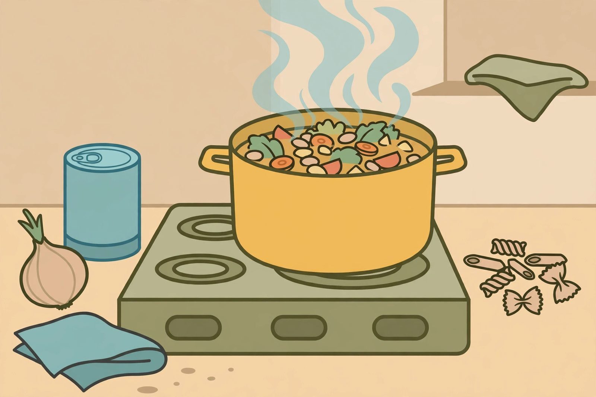

Hearty soups built from cupboard staples

Soup is the most forgiving dish in pantry cooking. Almost nothing you can put in a pot of simmering broth is a mistake, wrong proportions self-correct over an hour of bubbling, and a soup that feeds two tonight stretches to feed four tomorrow. Learn the formula once, and you'll never need another soup recipe from cans again.
The formula
Every shelf-stable soup has the same skeleton:
- A liquid base: stock or broth, bouillon dissolved in water, or plain water with generous seasoning.
- Something starchy: rice, pasta, barley, potatoes, or oats — this is what makes the soup filling.
- Something legume-y: canned or dried beans, lentils, split peas — the protein and body.
- Something canned or dried for character: diced tomatoes, corn, green beans, coconut milk.
- Flavor: an onion or garlic (fresh, powdered, or dried), dried herbs, a bay leaf, hot sauce, vinegar to finish.
Pick one from each line and you have soup. The lines are flexible — beans can double as the body and the flavor — but checking all five keeps you from ending up with hot bean water or plain noodle broth.
Timing: what goes in when
Most pantry soups cook in one pot in this order. First, soften any dried onion, garlic, or spices in oil for a couple of minutes — this wakes up the flavors. Add the liquid and the longest-cooking items: dried lentils, barley, or split peas go in now and get a 30-to-45-minute head start. After that, add canned beans, canned vegetables, and canned tomatoes. Add pasta or quick rice in the last stretch so they don't dissolve — pasta in soup keeps absorbing liquid even after you serve it, so keep it slightly firm. Dried herbs can go in early; finish with a splash of vinegar or a squeeze of citrus-type acidity to brighten everything.
Three starting points
Tomato and white bean: diced tomatoes, white beans, small pasta, garlic, oregano, olive oil to finish. Twenty-five minutes.
Red lentil and coconut: red lentils, coconut milk, curry paste or powder, broth. Thirty minutes, no soaking, melts into a thick golden soup.
Split pea style: split peas, broth, dried onion, a bay leaf, simmered long and low until they fall apart. Add canned potatoes or rice for extra heft.
Each one accepts additions: a can of corn, leftover rice, a different bean. Once you know the shape, you improvise freely.
Making thin soups hearty
The complaint about pantry soup is that it's thin. The fixes are all pantry items. Mash some of the beans against the side of the pot with a spoon — it thickens the broth instantly without flour. Add a starch: rice, oats, or small pasta. Stir in a spoonful of peanut butter or coconut milk for richness. And cook it down: an extra twenty minutes of simmering reduces liquid and concentrates flavor, no ingredients required. Salt generously at the end, not the beginning — reduced soup can get saltier than you expect.
Soup food safety, briefly
A big pot of soup cools slowly, and the middle of a pot stays warm long after the surface feels cool — that's exactly the condition bacteria like. Cool large batches quickly by dividing them into shallow containers before refrigerating, and get them into the fridge within a couple of hours. Reheat leftovers until they're steaming throughout, not just warm at the edges. When reheating, bring the soup to a full boil and stir well.
Soup as a strategy
Beyond being easy, soup is a budgeting tool: it's the dish where extra water and extra starch legitimately make more servings. It's also the dish that improves overnight — bean soups especially taste better the next day. Cook a double batch on a day you have time, and you have lunches and a backup dinner for the low-grocery end of the week.